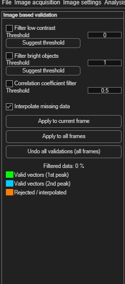

Image-based validation
While velocity-based validation judges vectors by their value, image-based validation judges them by the underlying image data — rejecting vectors computed from regions that were never going to produce trustworthy correlations in the first place: low contrast, glare, or poor image-to-image correlation.
Open via Validation → Image based validation. All three filters are off by default.

| Filter | Default threshold | Removes vectors where… |
|---|---|---|
| Filter low contrast | 0.001 | the input image's local contrast is low — too little signal to trust the correlation. |
| Filter bright objects | 0.001 | the image has connected bright objects (e.g. reflections, glare). |
| Correlation coefficient filter | 0.5 | image A and image B correlate poorly with each other — especially useful after background subtraction, where a bad background estimate can leave residual artifacts. |
The contrast and bright-object filters each have a Suggest threshold button that proposes a starting value based on your image data — treat it as a starting point to fine-tune, not a final answer.
Applying, undoing, and reading the result
These work exactly as in velocity-based validation:
- Interpolate missing data (on by default) fills gaps left by rejected vectors — interpolated vectors are drawn in orange.
- Click Apply to current frame or Apply to all frames.
- Click Undo all validations (all frames) to revert.
The panel reports Filtered data as a percentage, and uses the same vector color legend as velocity-based validation: green for valid (1st peak), cyan for valid (2nd peak), orange for rejected/interpolated — configurable in Modify plot appearance.